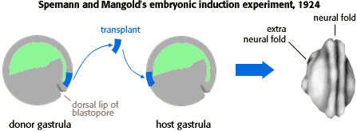

Developmental Mechanisms Problem Set
Problem 6 Tutorial: Spemann and Mangold's embryonic induction experiment
| What amphibian embryonic tissue was shown by Spemann and Mangold to induce the formation of the neural plate, and in some cases, to induce a complete second embryo. |
|  |
In the 1920s, Hans Spemann and his student Hilde Mangold demonstrated that a small amount of tissue transplanted from the dorsal lip of the blastopore could induce host tissue in another gastrula to form a second neural tube.
Further investigation revealed that it is the mesodermal tissue in the dorsal lip of the blastopore that induces nearby tissue to form a neural tube. In Spemann and Mangold's experiment, the mesodermal layer of the transplanted tissue induced adjacent tissue in the host to alter its development.
In the 1950s, the mechanism of induction was linked to protein molecules called growth factors. It is now known that growth factors play a major role in development.


Contact the Development Team
http://biology.arizona.edu
All contents copyright © 1996. All rights reserved.